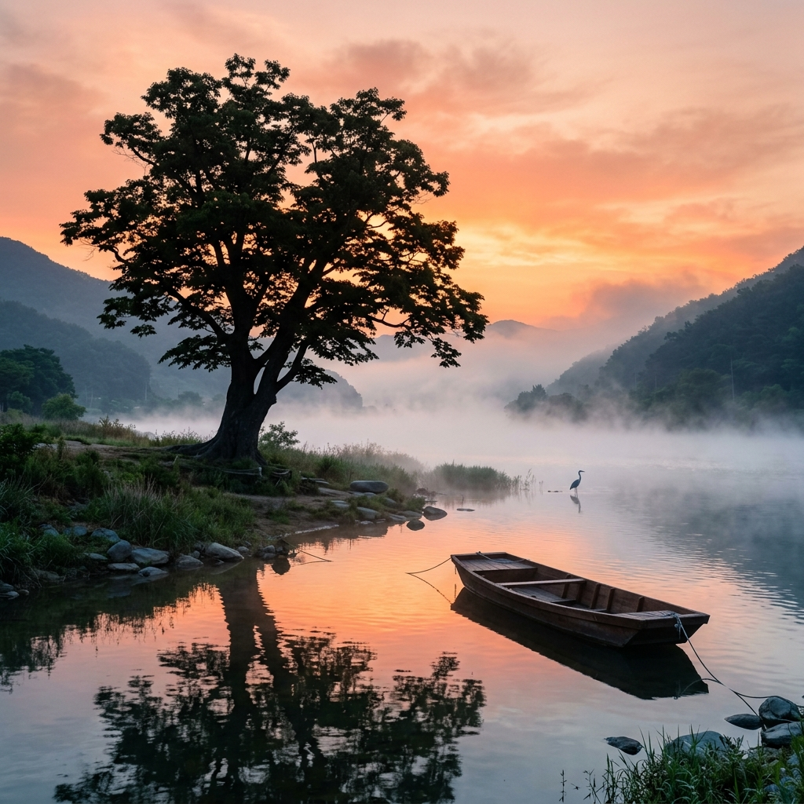
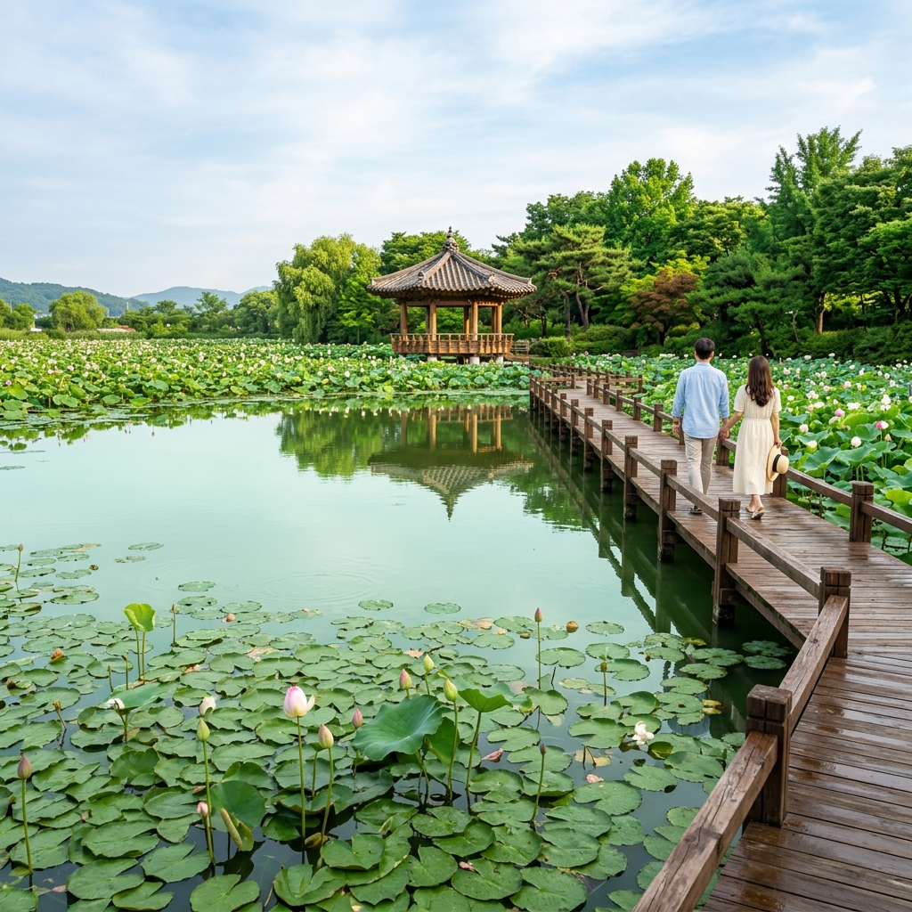
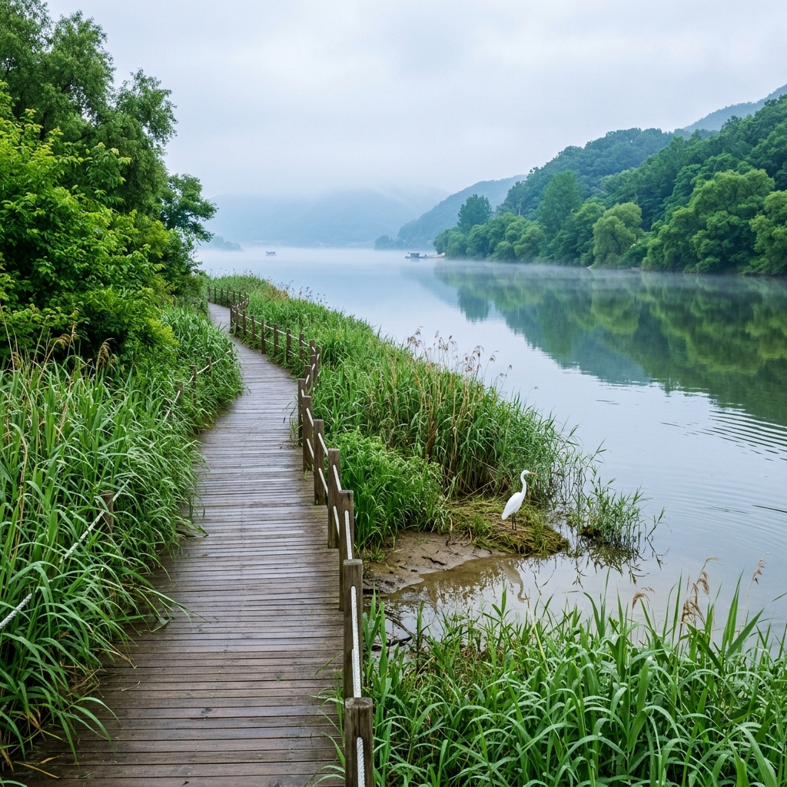

양평 두물머리 새벽 물안개 2026 — 6월 일출 명당과 세미원 연꽃 사전 답사 완전 가이드
경기도 양평 두물머리는 북한강과 남한강이 만나는 합수머리로, 이른 아침 수면 위로 피어오르는 물안개와 함께 수백 년 수령의 느티나무 한 그루가 그림 같은 실루엣을 만들어내는 국내 최고의 일출 사진 명소입니다. 6월이 되면 물안개 시즌이 이어지는 동시에, 바로 옆 세미원(洗美苑)에서는 연꽃·수련이 슬슬 개화를 준비하는 사전 답사 시기가 됩니다. 이 글에서는 2026년 6월 두물머리 새벽 물안개 감상부터 세미원 탐방, 주변 카페·맛집 코스까지 완전히 안내해 드립니다.
🌅 두물머리가 특별한 이유 — 합수머리가 만드는 물안개의 과학
두물머리의 물안개는 단순한 자연 현상이 아닙니다. 북한강과 남한강이 합류하는 지점에서 발생하는 물안개는 수온 차이와 기온 변화가 결합되어 만들어지는 복사무(輻射霧)의 일종입니다. 밤새 복사 냉각으로 기온이 내려간 새벽에, 낮 동안 태양열을 저장한 강물의 수온과 기온의 차이가 벌어지면서 수면 위로 수증기가 피어오릅니다.
6월의 두물머리는 봄·가을만큼 빈번하지는 않지만, 전날 맑고 바람이 없었던 날 다음 날 새벽에 물안개가 발생할 확률이 높습니다. 특히 5월 말~6월 중순은 장마 전 건조한 날씨가 이어지며, 기온 교차가 크기 때문에 물안개 발생 빈도가 상대적으로 높은 시기입니다.
400년 수령으로 추정되는 두물머리 느티나무가 물안개 속에서 실루엣을 드러내는 장면은 수많은 사진작가들이 꼽는 국내 최고의 풍경 중 하나입니다. 이 느티나무 한 그루는 문화재로 지정되어 보호받고 있으며, 매년 음력 정월 대보름날 이 나무 앞에서 마을 당산제가 열리기도 합니다.

두물머리 새벽 — 400년 느티나무와 물안개, 일출 실루엣 / AI 제작 이미지
⏰ 6월 일출 시간 및 최적 방문 전략
두물머리 물안개 감상의 최적 시간대는 일출 30분 전부터 일출 후 40분까지입니다. 6월 서울·경기 기준 일출 시간은 약 오전 5시 10~15분으로, 두물머리에서는 오전 4시 40분~5시 사이에는 현장에 도착해 있는 것이 이상적입니다.
오전 6시가 넘으면 기온이 오르면서 물안개가 급격히 걷히기 시작합니다. 따라서 두물머리에서의 황금 관람 시간은 오전 4시 40분부터 6시 10분까지, 약 1시간 30분에 불과합니다. 이 시간대를 놓치면 밋밋한 강변 풍경만 남게 되므로, 전날 숙소에서 1박 후 이른 기상을 계획하는 것을 강력히 권장합니다.
💡 물안개 발생 예측 꿀팁: 전날 오후 기상청 날씨 앱에서 새벽 습도를 확인하세요. 새벽 습도가 80% 이상이고 바람이 0~2m/s 이하의 잔잔한 날이면 물안개가 발생할 가능성이 매우 높습니다.
주말 새벽에는 사진 동호회 회원들이 삼각대를 챙겨 이미 자리를 잡고 있습니다. 느티나무 정면 구도를 원한다면 최소 오전 5시 이전까지 도착해야 명당 자리를 확보할 수 있습니다. 평일 새벽은 혼자 조용히 넓은 강변을 독차지하는 호사를 누릴 수 있습니다.
🌸 세미원(洗美苑) — 6월 방문의 또 다른 이유
두물머리에서 걸어서 5분 거리에 위치한 세미원은 총 면적 18만 ㎡에 6개의 대형 연꽃 연못을 품은 수생식물 테마파크입니다. '물로 씻고 꽃으로 아름답게'라는 뜻을 가진 세미원은, 북한강 물을 자연 정화하는 환경 철학을 바탕으로 조성된 공간입니다.
6월은 세미원의 사전 답사 시기입니다. 본격적인 연꽃 개화는 6월 하순~7월 초에 이루어지지만, 6월 중순부터는 수련이 먼저 붉고 흰 꽃을 피우기 시작합니다. 6월의 세미원은 만개 시즌만큼 화려하지는 않지만, 반대로 조용하고 한적한 분위기 속에서 풍성한 녹음과 잔잔한 수면을 여유롭게 감상할 수 있어 오히려 더 편안한 탐방이 가능합니다.
세미원 내부에는 넓은 산책로와 쉼터, 갤러리 공간이 마련되어 있으며, 각종 수생식물에 대한 해설판이 곳곳에 배치되어 어린이 교육 방문지로도 훌륭합니다.
| 구분 |
내용 |
| 주소 |
경기도 양평군 양서면 두물머리길 49 |
| 운영시간 |
09:00~18:00 (6~8월 19:00까지 연장 운영 가능, 사전 확인 권장) |
| 입장료 |
성인 5,000원 / 청소년 3,000원 / 어린이 2,000원 |
| 주차장 |
세미원 공영주차장 무료 (주말 오전 10시 이후 혼잡) |
| 연꽃 개화 시기 |
6월 하순~8월 중순 (최성기 7월 초~7월 하순) |
📍 두물머리 주요 포토 스팟 완전 정복
두물머리를 방문하는 분들이 반드시 알아두어야 할 포토 스팟을 안내해 드립니다. 각 장소의 특성을 이해하면 방문 목적에 맞는 최적의 사진을 담아올 수 있습니다.
① 느티나무 정면 뷰 포인트: 두물머리 입구에서 강변을 따라 100m 걸어 들어가면 나오는 지점으로, 느티나무와 강 합류 지점이 가장 잘 보입니다. 일출 물안개 사진의 클래식 포지션입니다.
② 황포돛배 계류장: 전통 황포돛배가 묶여 있는 선착장 주변은 배를 전경에 넣은 구도로 독특한 분위기의 강변 사진을 찍기에 좋습니다.
③ 능내역(廢驛) 전망대: 두물머리에서 차로 5분 거리의 폐철도역 능내역(현재 자전거 코스 중간 쉼터)에서 바라보는 두물머리 방향 파노라마가 또 다른 명소입니다.

세미원 연꽃 연못 — 6월 수련 개화기 고요한 수면 풍경 / AI 제작 이미지
🚴 두물머리 자전거 코스 — 두강이 만나는 강변 라이딩
두물머리는 남한강 자전거길과 북한강 자전거길이 만나는 교차점이기도 합니다. 국토종주 자전거길의 핵심 구간이 이곳을 지나며, 두물머리에서 양수리 방향으로 이어지는 강변 자전거 도로는 풀이 우거진 6월에 특히 아름답습니다.
자전거를 가져오지 않아도 됩니다. 두물머리 입구 인근에 공공 자전거 대여소가 운영되며, 시간당 2,000~3,000원 수준으로 자전거를 빌릴 수 있습니다. 강변 자전거길을 따라 양수역까지 편도 5km 라이딩을 즐긴 뒤 경의중앙선 기차를 타고 돌아오는 원점 코스는 6월 아침 나들이로 안성맞춤입니다.
☕ 주변 카페 & 맛집 정보
두물머리 주변에는 감성적인 한강·북한강 뷰 카페들이 밀집해 있습니다. 이른 새벽 물안개를 감상한 뒤 문을 여는 카페(대부분 오전 8~9시 오픈)에서 따뜻한 커피 한 잔으로 여정을 마무리하는 것이 두물머리 방문의 정석 코스입니다.
점심 식사는 두물머리에서 차로 10분 거리인 양수리 읍내로 나가면 한정식, 닭볶음탕, 국밥 등 다양한 선택지가 있습니다. 양수리 시장 골목에 있는 재래식 장터 국밥(1인 8,000원)은 현지 주민들이 매일 찾는 소박하고 진한 국물 맛집으로 유명합니다.
💡 서울에서의 접근성: 경의중앙선 양수역 하차 후 도보 15분 또는 택시 5분이면 두물머리에 도착합니다. 자가용 방문 시 서울양양고속도로 서종IC 이용 후 10분 거리입니다.
🌿 6월 두물머리 생태 이야기 — 갈대와 새들의 천국
두물머리의 합수머리 일대는 수생식물 군락과 습지 생태계가 발달한 내륙 생태 보고입니다. 6월이 되면 강변 갈대밭이 초록빛으로 물들고, 백로·왜가리·물총새 등 다양한 수조류가 물안개 속을 오가는 장면이 연출됩니다.
특히 두물머리 물억새 군락은 9~10월에 절정을 이루지만, 6월에는 키가 60cm 내외로 자란 여린 억새 줄기들이 바람에 살랑거리며 독특한 운치를 자아냅니다. 느티나무 주변 강변에 설치된 친환경 탐방로(목재 데크)를 따라 천천히 걸으면, 물새의 울음소리와 강물 소리가 섞인 자연 사운드 환경을 온몸으로 느낄 수 있습니다.

두물머리 강변 생태탐방로 — 백로와 갈대 습지 6월 풍경 / AI 제작 이미지
📝 두물머리 방문 핵심 요약
| 항목 |
내용 |
| 최적 방문 시간 |
오전 4:40~6:10 (일출 30분 전 ~ 일출 후 40분) |
| 6월 물안개 가능성 |
맑고 바람 없는 날 새벽, 습도 80% 이상 시 높음 |
| 입장료 |
두물머리 무료 / 세미원 성인 5,000원 |
| 대중교통 |
경의중앙선 양수역 하차 후 도보 15분 |
| 추천 코스 |
두물머리 일출 감상 → 세미원 탐방 → 강변 카페 → 자전거 라이딩 |
#두물머리
#양평여행
#두물머리물안개
#6월일출명소
#세미원
#연꽃정원
#경기도여행
#북한강남한강
#새벽여행
#양수리